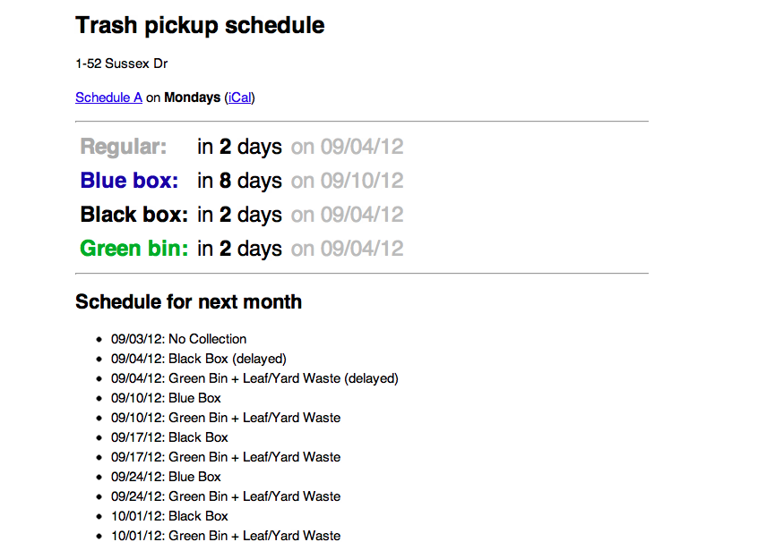
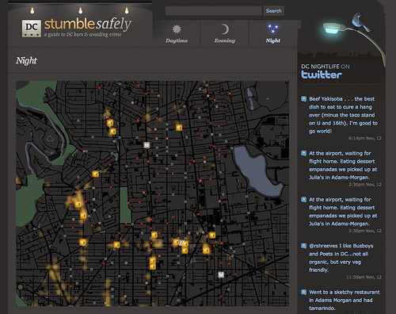
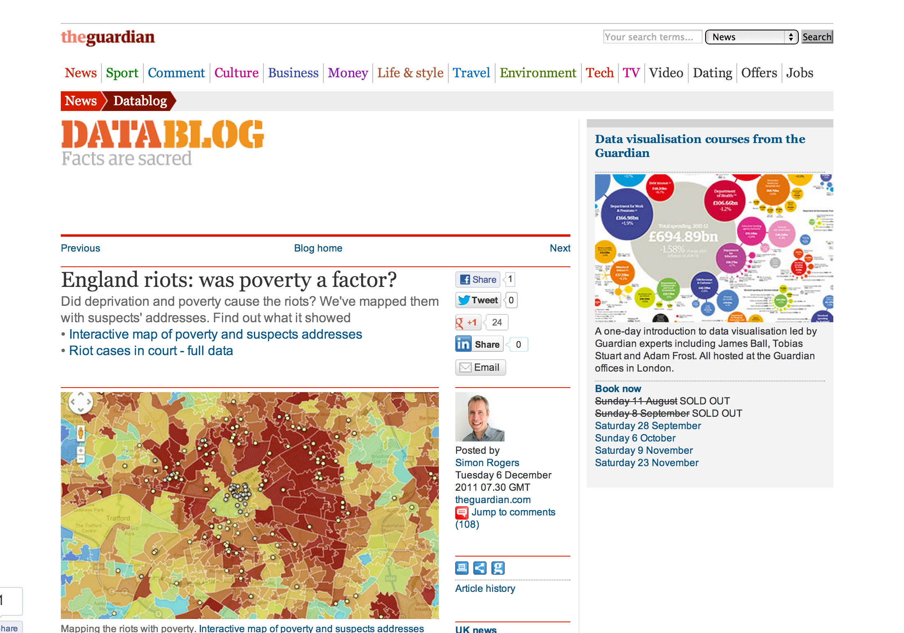

Canada FAQ
Q: Do we say aboot?
A: No
Q: Do we say eh?
A: Yes
Q: Do you like Americans?
A: Sure
Q: Do you apologize a lot?
A: Yes. Sorry about that.
Q: What units do you use?
A: Metric
Q: Is it cold?
A: Oh My God
-45 degrees CELSIUS to 45 degrees CELSIUS

Q: Are there polar bears?
A: Yes
Q: Do you have a president?
A: Prime Minister


Open Data
wtf?
Open Data is...
Freely Accessible
And
Machine Readable
(and free to distribute/modify)
Mmmm...raw data

Mmmm...raw data on a map

Ottawatrash.ca
Stumble safely
Dog park finder

Fix my street

Don't Eat.at

Google Translate
Proracunski Kalkulator

Data Journalism
(It's not always about apps!)
Protip Prison

MBTA Visualizations


Artisanal Data
By @lukec


Sweet music
Sweet music

Listen to wikipedia

Where is this data?
Cities

National Governments

Intl' Organizations

In Space

You

Open Street Maps
Why do cities release data?
Let's discuss
Why do companies release data?
Let's discuss

- Underperforming mine in Ontario, Canada. Cost of acquiring an oz. of gold = $360, and the annual production ate is 53,000 oz.
- Goldcorp releases geographic data about the mine, and hold a $500K contest for people to find gold
- The winner is a company in Australia. Of the top 5 locations they found, Goldcorp struck gold at 4 of them.
- Now the mine produces gold at $59 an ounce, and it produces 504,000 oz. a year.
(http://www.fastcompany.com/44917/he-struck-gold-net-really)
Case study: Kaggle
Dangers of Open Data
Let's discuss